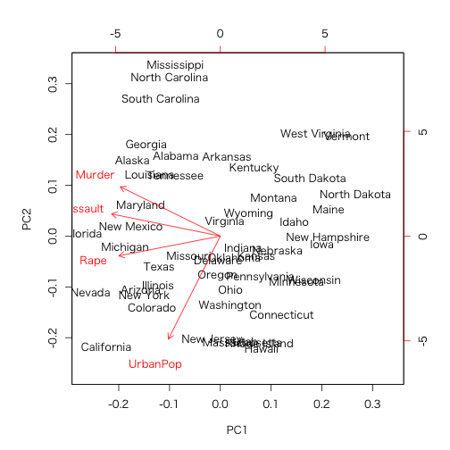

R標準の統計解析パッケージ
> library(stats)
バージョン: 3.2.2
| 関数名 | 概略 |
|---|---|
.checkMFClasses |
Functions to Check the Type of Variables passed to Model Frames |
AIC |
Akaike's An Information Criterion |
ARMAacf |
Compute Theoretical ACF for an ARMA Process |
ARMAtoMA |
Convert ARMA Process to Infinite MA Process |
Beta |
The Beta Distribution |
Binomial |
The Binomial Distribution |
Box.test |
Box-Pierce and Ljung-Box Tests |
C |
Sets Contrasts for a Factor |
Cauchy |
The Cauchy Distribution |
Chisquare |
The (non-central) Chi-Squared Distribution |
Distributions |
Distributions in the stats package |
Exponential |
The Exponential Distribution |
FDist |
The F Distribution |
GammaDist |
The Gamma Distribution |
Geometric |
The Geometric Distribution |
HoltWinters |
Holt-Winters Filtering |
Hypergeometric |
The Hypergeometric Distribution |
IQR |
The Interquartile Range |
KalmanLike |
Kalman Filtering |
Logistic |
The Logistic Distribution |
Lognormal |
The Log Normal Distribution |
Multinomial |
The Multinomial Distribution |
NLSstAsymptotic |
Fit the Asymptotic Regression Model |
NLSstClosestX |
Inverse Interpolation |
NLSstLfAsymptote |
Horizontal Asymptote on the Left Side |
NLSstRtAsymptote |
Horizontal Asymptote on the Right Side |
NegBinomial |
The Negative Binomial Distribution |
Normal |
The Normal Distribution |
PP.test |
Phillips-Perron Test for Unit Roots |
Poisson |
The Poisson Distribution |
SSD |
SSD Matrix and Estimated Variance Matrix in Multivariate Models |
SSasymp |
Self-Starting Nls Asymptotic Regression Model |
SSasympOff |
Self-Starting Nls Asymptotic Regression Model with an Offset |
SSasympOrig |
Self-Starting Nls Asymptotic Regression Model through the Origin |
SSbiexp |
Self-Starting Nls Biexponential model |
SSfol |
Self-Starting Nls First-order Compartment Model |
SSfpl |
Self-Starting Nls Four-Parameter Logistic Model |
SSgompertz |
Self-Starting Nls Gompertz Growth Model |
SSlogis |
Self-Starting Nls Logistic Model |
SSmicmen |
Self-Starting Nls Michaelis-Menten Model |
SSweibull |
Self-Starting Nls Weibull Growth Curve Model |
SignRank |
Distribution of the Wilcoxon Signed Rank Statistic |
StructTS |
Fit Structural Time Series |
TDist |
The Student t Distribution |
Tukey |
The Studentized Range Distribution |
TukeyHSD |
Compute Tukey Honest Significant Differences |
Uniform |
The Uniform Distribution |
Weibull |
The Weibull Distribution |
Wilcoxon |
Distribution of the Wilcoxon Rank Sum Statistic |
acf |
Auto- and Cross- Covariance and -Correlation Function Estimation |
acf2AR |
Compute an AR Process Exactly Fitting an ACF |
add1 |
Add or Drop All Possible Single Terms to a Model |
addmargins |
Puts Arbitrary Margins on Multidimensional Tables or Arrays |
aggregate |
Compute Summary Statistics of Data Subsets |
alias |
Find Aliases (Dependencies) in a Model |
anova |
Anova Tables |
anova.glm |
Analysis of Deviance for Generalized Linear Model Fits |
anova.lm |
ANOVA for Linear Model Fits |
anova.mlm |
Comparisons between Multivariate Linear Models |
ansari.test |
Ansari-Bradley Test |
aov |
Fit an Analysis of Variance Model |
approxfun |
Interpolation Functions |
ar |
Fit Autoregressive Models to Time Series |
ar.ols |
Fit Autoregressive Models to Time Series by OLS |
arima |
ARIMA Modelling of Time Series |
arima.sim |
Simulate from an ARIMA Model |
arima0 |
ARIMA Modelling of Time Series - Preliminary Version |
as.hclust |
Convert Objects to Class hclust |
asOneSidedFormula |
Convert to One-Sided Formula |
ave |
Group Averages Over Level Combinations of Factors |
bartlett.test |
Bartlett Test of Homogeneity of Variances |
binom.test |
Exact Binomial Test |
biplot |
Biplot of Multivariate Data |
biplot.princomp |
Biplot for Principal Components |
bw.nrd0 |
Bandwidth Selectors for Kernel Density Estimation |
cancor |
Canonical Correlations |
case.names |
Case and Variable Names of Fitted Models |
chisq.test |
Pearson's Chi-squared Test for Count Data |
cmdscale |
Classical (Metric) Multidimensional Scaling |
coef |
Extract Model Coefficients |
complete.cases |
Find Complete Cases |
confint |
Confidence Intervals for Model Parameters |
constrOptim |
Linearly Constrained Optimization |
contr.helmert |
(Possibly Sparse) Contrast Matrices |
contrasts |
Get and Set Contrast Matrices |
convolve |
Convolution of Sequences via FFT |
cophenetic |
Cophenetic Distances for a Hierarchical Clustering |
cor |
Correlation, Variance and Covariance (Matrices) |
cor.test |
Test for Association/Correlation Between Paired Samples |
cov.wt |
Weighted Covariance Matrices |
cpgram |
Plot Cumulative Periodogram |
cutree |
Cut a Tree into Groups of Data |
decompose |
Classical Seasonal Decomposition by Moving Averages |
delete.response |
Modify Terms Objects |
dendrapply |
Apply a Function to All Nodes of a Dendrogram |
dendrogram |
General Tree Structures |
density |
Kernel Density Estimation |
deriv |
Symbolic and Algorithmic Derivatives of Simple Expressions |
deviance |
Model Deviance |
df.residual |
Residual Degrees-of-Freedom |
diff.ts |
Methods for Time Series Objects |
diffinv |
Discrete Integration: Inverse of Differencing |
dist |
Distance Matrix Computation |
dummy.coef |
Extract Coefficients in Original Coding |
ecdf |
Empirical Cumulative Distribution Function |
eff.aovlist |
Compute Efficiencies of Multistratum Analysis of Variance |
effects |
Effects from Fitted Model |
embed |
Embedding a Time Series |
expand.model.frame |
Add new variables to a model frame |
extractAIC |
Extract AIC from a Fitted Model |
factanal |
Factor Analysis |
factor.scope |
Compute Allowed Changes in Adding to or Dropping from a Formula |
family |
Family Objects for Models |
family.glm |
Accessing Generalized Linear Model Fits |
family.lm |
Accessing Linear Model Fits |
fft |
Fast Discrete Fourier Transform |
filter |
Linear Filtering on a Time Series |
fisher.test |
Fisher's Exact Test for Count Data |
fitted |
Extract Model Fitted Values |
fivenum |
Tukey Five-Number Summaries |
fligner.test |
Fligner-Killeen Test of Homogeneity of Variances |
formula |
Model Formulae |
formula.nls |
Extract Model Formula from nls Object |
friedman.test |
Friedman Rank Sum Test |
ftable |
Flat Contingency Tables |
ftable.formula |
Formula Notation for Flat Contingency Tables |
getInitial |
Get Initial Parameter Estimates |
glm |
Fitting Generalized Linear Models |
glm.control |
Auxiliary for Controlling GLM Fitting |
hclust |
Hierarchical Clustering |
heatmap |
Draw a Heat Map |
identify.hclust |
Identify Clusters in a Dendrogram |
influence.measures |
Regression Deletion Diagnostics |
integrate |
Integration of One-Dimensional Functions |
interaction.plot |
Two-way Interaction Plot |
is.empty.model |
Test if a Model's Formula is Empty |
isoreg |
Isotonic / Monotone Regression |
kernapply |
Apply Smoothing Kernel |
kernel |
Smoothing Kernel Objects |
kmeans |
K-Means Clustering |
kruskal.test |
Kruskal-Wallis Rank Sum Test |
ks.test |
Kolmogorov-Smirnov Tests |
ksmooth |
Kernel Regression Smoother |
lag |
Lag a Time Series |
lag.plot |
Time Series Lag Plots |
line |
Robust Line Fitting |
listof |
A Class for Lists of (Parts of) Model Fits |
lm |
Fitting Linear Models |
lm.fit |
Fitter Functions for Linear Models |
lm.influence |
Regression Diagnostics |
loadings |
Print Loadings in Factor Analysis |
loess |
Local Polynomial Regression Fitting |
loess.control |
Set Parameters for Loess |
logLik |
Extract Log-Likelihood |
loglin |
Fitting Log-Linear Models |
lowess |
Scatter Plot Smoothing |
ls.diag |
Compute Diagnostics for 'lsfit' Regression Results |
ls.print |
Print 'lsfit' Regression Results |
lsfit |
Find the Least Squares Fit |
mad |
Median Absolute Deviation |
mahalanobis |
Mahalanobis Distance |
make.link |
Create a Link for GLM Families |
makepredictcall |
Utility Function for Safe Prediction |
manova |
Multivariate Analysis of Variance |
mantelhaen.test |
Cochran-Mantel-Haenszel Chi-Squared Test for Count Data |
mauchly.test |
Mauchly's Test of Sphericity |
mcnemar.test |
McNemar's Chi-squared Test for Count Data |
median |
Median Value |
medpolish |
Median Polish of a Matrix |
model.extract |
Extract Components from a Model Frame |
model.frame |
Extracting the Model Frame from a Formula or Fit |
model.matrix |
Construct Design Matrices |
model.tables |
Compute Tables of Results from an Aov Model Fit |
monthplot |
Plot a Seasonal or other Subseries from a Time Series |
mood.test |
Mood Two-Sample Test of Scale |
na.action |
NA Action |
na.contiguous |
Find Longest Contiguous Stretch of non-NAs |
na.fail |
Handle Missing Values in Objects |
naprint |
Adjust for Missing Values |
naresid |
Adjust for Missing Values |
nextn |
Highly Composite Numbers |
nlm |
Non-Linear Minimization |
nlminb |
Optimization using PORT routines |
nls |
Nonlinear Least Squares |
nls.control |
Control the Iterations in nls |
nobs |
Extract the Number of Observations from a Fit. |
numericDeriv |
Evaluate Derivatives Numerically |
offset |
Include an Offset in a Model Formula |
oneway.test |
Test for Equal Means in a One-Way Layout |
optim |
General-purpose Optimization |
optimize |
One Dimensional Optimization |
order.dendrogram |
Ordering or Labels of the Leaves in a Dendrogram |
p.adjust |
Adjust P-values for Multiple Comparisons |
pairwise.prop.test |
Pairwise comparisons for proportions |
pairwise.t.test |
Pairwise t tests |
pairwise.table |
Tabulate p values for pairwise comparisons |
pairwise.wilcox.test |
Pairwise Wilcoxon Rank Sum Tests |
plot.HoltWinters |
Plot function for HoltWinters objects |
plot.acf |
Plot Autocovariance and Autocorrelation Functions |
plot.density |
Plot Method for Kernel Density Estimation |
plot.isoreg |
Plot Method for isoreg Objects |
plot.lm |
Plot Diagnostics for an lm Object |
plot.ppr |
Plot Ridge Functions for Projection Pursuit Regression Fit |
plot.profile.nls |
Plot a profile.nls Object |
plot.spec |
Plotting Spectral Densities |
plot.stepfun |
Plot Step Functions |
plot.stl |
Methods for STL Objects |
plot.ts |
Plotting Time-Series Objects |
poisson.test |
Exact Poisson tests |
poly |
Compute Orthogonal Polynomials |
power |
Create a Power Link Object |
power.anova.test |
Power Calculations for Balanced One-Way Analysis of Variance Tests |
power.prop.test |
Power Calculations for Two-Sample Test for Proportions |
power.t.test |
Power calculations for one and two sample t tests |
ppoints |
Ordinates for Probability Plotting |
ppr |
Projection Pursuit Regression |
prcomp |
Principal Components Analysis |
predict |
Model Predictions |
predict.Arima |
Forecast from ARIMA fits |
predict.HoltWinters |
Prediction Function for Fitted Holt-Winters Models |
predict.glm |
Predict Method for GLM Fits |
predict.lm |
Predict method for Linear Model Fits |
predict.loess |
Predict Loess Curve or Surface |
predict.nls |
Predicting from Nonlinear Least Squares Fits |
predict.smooth.spline |
Predict from Smoothing Spline Fit |
preplot |
Pre-computations for a Plotting Object |
princomp |
Principal Components Analysis |
print.power.htest |
Print method for power calculation object |
print.ts |
Printing and Formatting of Time-Series Objects |
printCoefmat |
Print Coefficient Matrices |
profile |
Generic Function for Profiling Models |
profile.nls |
Method for Profiling nls Objects |
proj |
Projections of Models |
prop.test |
Test of Equal or Given Proportions |
prop.trend.test |
Test for trend in proportions |
qbirthday |
Probability of coincidences |
qqnorm |
Quantile-Quantile Plots |
quade.test |
Quade Test |
quantile |
Sample Quantiles |
r2dtable |
Random 2-way Tables with Given Marginals |
rWishart |
Random Wishart Distributed Matrices |
read.ftable |
Manipulate Flat Contingency Tables |
rect.hclust |
Draw Rectangles Around Hierarchical Clusters |
relevel |
Reorder Levels of Factor |
reorder.default |
Reorder Levels of a Factor |
reorder.dendrogram |
Reorder a Dendrogram |
replications |
Number of Replications of Terms |
reshape |
Reshape Grouped Data |
residuals |
Extract Model Residuals |
runmed |
Running Medians - Robust Scatter Plot Smoothing |
scatter.smooth |
Scatter Plot with Smooth Curve Fitted by Loess |
screeplot |
Screeplots |
sd |
Standard Deviation |
se.contrast |
Standard Errors for Contrasts in Model Terms |
selfStart |
Construct Self-starting Nonlinear Models |
setNames |
Set the Names in an Object |
shapiro.test |
Shapiro-Wilk Normality Test |
simulate |
Simulate Responses |
smooth |
Tukey's (Running Median) Smoothing |
smooth.spline |
Fit a Smoothing Spline |
smoothEnds |
End Points Smoothing (for Running Medians) |
sortedXyData |
Create a 'sortedXyData' Object |
spec.ar |
Estimate Spectral Density of a Time Series from AR Fit |
spec.pgram |
Estimate Spectral Density of a Time Series by a Smoothed Periodogram |
spec.taper |
Taper a Time Series by a Cosine Bell |
spectrum |
Spectral Density Estimation |
splinefun |
Interpolating Splines |
start |
Encode the Terminal Times of Time Series |
stat.anova |
GLM Anova Statistics |
stats-deprecated |
Deprecated Functions in Package 'stats' |
stats-package |
The R Stats Package |
step |
Choose a model by AIC in a Stepwise Algorithm |
stepfun |
Step Functions - Creation and Class |
stl |
Seasonal Decomposition of Time Series by Loess |
summary.aov |
Summarize an Analysis of Variance Model |
summary.glm |
Summarizing Generalized Linear Model Fits |
summary.lm |
Summarizing Linear Model Fits |
summary.manova |
Summary Method for Multivariate Analysis of Variance |
summary.nls |
Summarizing Non-Linear Least-Squares Model Fits |
summary.princomp |
Summary method for Principal Components Analysis |
supsmu |
Friedman's SuperSmoother |
symnum |
Symbolic Number Coding |
t.test |
Student's t-Test |
termplot |
Plot Regression Terms |
terms |
Model Terms |
terms.formula |
Construct a terms Object from a Formula |
terms.object |
Description of Terms Objects |
time |
Sampling Times of Time Series |
toeplitz |
Form Symmetric Toeplitz Matrix |
ts |
Time-Series Objects |
ts.plot |
Plot Multiple Time Series |
ts.union |
Bind Two or More Time Series |
tsSmooth |
Use Fixed-Interval Smoothing on Time Series |
tsdiag |
Diagnostic Plots for Time-Series Fits |
tsp |
Tsp Attribute of Time-Series-like Objects |
uniroot |
One Dimensional Root (Zero) Finding |
update |
Update and Re-fit a Model Call |
update.formula |
Model Updating |
var.test |
F Test to Compare Two Variances |
varimax |
Rotation Methods for Factor Analysis |
vcov |
Calculate Variance-Covariance Matrix for a Fitted Model Object |
weighted.mean |
Weighted Arithmetic Mean |
weighted.residuals |
Compute Weighted Residuals |
weights |
Extract Model Weights |
wilcox.test |
Wilcoxon Rank Sum and Signed Rank Tests |
window |
Time Windows |
xtabs |
Cross Tabulation |
主成分分析を実施
> library(vegan)
> data(dune)
> tmp <- prcomp(dune, scale = TRUE)
> tmp
Standard deviations:
[1] 2.651876e+00 2.235468e+00 1.885408e+00 1.626053e+00 1.462502e+00
[6] 1.325825e+00 1.215869e+00 1.147346e+00 1.052556e+00 8.994324e-01
[11] 8.632887e-01 8.346228e-01 7.582115e-01 5.982967e-01 4.717356e-01
[16] 4.687690e-01 3.882168e-01 3.631904e-01 2.519873e-01 2.196148e-16
Rotation:
PC1 PC2 PC3 PC4 PC5
Achimill 0.277358149 -0.015906183 -0.171540078 -0.049173592 -0.29797708
Agrostol -0.270446458 0.225338171 0.075149364 -0.022996313 0.02558700
Airaprae 0.001618847 -0.334422632 0.274278753 0.056419555 -0.21157505
Alopgeni -0.099368966 0.262715304 0.202867708 0.183634250 0.07939982
Anthodor 0.202286085 -0.252994352 -0.025027518 0.149016455 -0.25727867
Bellpere 0.201572477 0.127576066 0.038861550 -0.322454771 -0.07154160
Bromhord 0.225274286 0.118823565 -0.002994863 -0.251045921 -0.22298470
Chenalbu -0.054616149 0.119088370 0.135179981 0.232444003 -0.12138149
Cirsarve 0.016649960 0.149380662 0.193439742 -0.189189359 0.05836970
Comapalu -0.161477760 -0.039960081 -0.187024484 -0.106012285 -0.19183468
Eleopalu -0.293597121 -0.006473954 -0.227685384 -0.094858485 -0.04635077
Elymrepe 0.109724080 0.240308038 0.133618192 -0.093621154 -0.08257644
Empenigr -0.006634467 -0.306810069 0.291414519 0.041757498 -0.08967878
Hyporadi 0.017519532 -0.352770478 0.288137299 0.004269798 -0.03521201
Juncarti -0.238810633 0.054362038 -0.104288726 0.005407353 0.12006764
Juncbufo -0.030874269 0.168783055 0.160848821 0.394627384 0.05976745
Lolipere 0.260781049 0.126992599 -0.053228671 -0.173046076 0.19908008
Planlanc 0.260637241 -0.115975258 -0.252281165 0.152008787 0.12508002
Poaprat 0.247586440 0.211405188 0.045967251 -0.147978053 0.18606513
Poatriv 0.147625073 0.320567091 0.098901591 0.195193384 -0.13875194
Ranuflam -0.306240477 0.007882711 -0.168936684 -0.028939692 -0.05685098
Rumeacet 0.177246450 0.004371686 -0.205222489 0.406962363 0.05580819
Sagiproc -0.037114076 0.070055086 0.402043149 0.083191067 0.18822893
Salirepe -0.115885992 -0.237949108 0.034692521 -0.100795686 0.16147267
Scorautu 0.170911118 -0.232081941 0.135559337 -0.107874951 0.16122343
Trifprat 0.179727680 -0.045658643 -0.260817422 0.328898976 0.06476554
Trifrepe 0.167398084 0.019578344 -0.113457105 -0.022272789 -0.08044923
Vicilath 0.112386371 -0.106027466 -0.028724352 -0.238177831 0.38835725
Bracruta -0.025688498 -0.141949026 -0.141161217 0.090465605 0.51332296
Callcusp -0.244915366 -0.037979317 -0.222350635 -0.113087021 -0.13890022
PC6 PC7 PC8 PC9 PC10
Achimill -0.018250222 -0.006282728 -0.1465146630 -0.037072033 -0.284943943
Agrostol 0.186756604 0.245082868 0.0123098484 -0.119510658 -0.110920492
Airaprae 0.096422424 -0.097712511 0.0321399888 -0.009575434 -0.099636156
Alopgeni -0.105946895 0.020135820 -0.0824459661 0.190755977 -0.332376870
Anthodor 0.156125796 0.026640693 -0.0500822271 -0.115352982 -0.235971913
Bellpere 0.085903724 0.187617173 -0.2832554823 0.139865201 0.126977572
Bromhord 0.099278861 0.281830918 -0.1759418372 -0.012395382 -0.215272689
Chenalbu -0.354866757 0.111081984 -0.2457657313 -0.442523896 0.230253188
Cirsarve 0.418278378 0.321366302 0.1896615933 -0.317577712 0.082926161
Comapalu -0.140848501 0.213691628 0.4385138707 0.162039456 0.272304254
Eleopalu 0.086146760 0.039331789 -0.0006513118 0.039218528 -0.335830173
Elymrepe 0.262309219 -0.245075057 0.0238913356 0.339835808 0.352362019
Empenigr 0.093431268 0.077015555 -0.0416727213 0.185013217 -0.019670023
Hyporadi -0.004373535 -0.049490532 0.0919817016 -0.001399784 -0.103591182
Juncarti 0.154461344 -0.179380327 -0.2079525280 0.271134136 -0.283072280
Juncbufo -0.201014256 0.039793136 -0.0083079686 0.182621410 0.031942060
Lolipere 0.018960837 -0.180667416 0.1327932031 -0.077020674 -0.113576629
Planlanc 0.044506375 0.056964592 -0.0185270317 -0.214586350 0.016949100
Poaprat -0.033908359 -0.229590251 -0.0138181427 -0.004776205 -0.023703719
Poatriv -0.028641057 0.103937114 -0.2547465226 0.011586367 -0.038789045
Ranuflam -0.042350839 0.090057291 -0.2759871539 -0.125750626 0.001195093
Rumeacet 0.246487606 0.113785393 0.0366406873 0.134230105 0.114249032
Sagiproc 0.115864362 0.311970978 0.1808234119 -0.042954530 -0.140063426
Salirepe 0.118664904 0.045789547 -0.5063249251 0.042911714 0.335199480
Scorautu -0.173373768 0.251032453 -0.1852370018 0.228971454 0.077604381
Trifprat 0.232524328 0.128553835 0.0437890155 -0.042611817 0.089272402
Trifrepe -0.322607335 0.422132017 0.1215698753 0.383096915 -0.067705602
Vicilath -0.352398143 0.040430177 0.0618260529 -0.177126252 -0.118331138
Bracruta 0.159976508 0.205823892 -0.0964632149 0.102689199 -0.085332107
Callcusp 0.018570846 0.167200631 -0.0181969123 0.034626421 0.067508897
PC11 PC12 PC13 PC14 PC15
Achimill 0.132717925 0.134230514 -0.034529992 0.216182453 -0.141401817
Agrostol -0.059618860 -0.073683574 -0.023668258 -0.123235118 -0.106634349
Airaprae -0.019070127 -0.058358107 0.012396331 0.006629187 0.077238090
Alopgeni 0.039952489 -0.472711933 -0.065874698 0.056133072 0.142673465
Anthodor 0.099085859 0.039405527 0.030439268 -0.182295662 -0.191244567
Bellpere 0.191229646 -0.339813778 0.178784646 -0.145988631 -0.020153703
Bromhord 0.109494416 0.244018820 0.037703343 0.079868176 -0.018373727
Chenalbu -0.227060023 0.018287239 0.171677291 -0.175868511 -0.279195670
Cirsarve -0.003959815 0.141735155 0.001321334 0.049219524 0.036375284
Comapalu -0.051236512 0.049521631 0.419309406 0.122054623 -0.083871507
Eleopalu -0.131378144 -0.080553382 0.131165765 -0.207537309 0.007388714
Elymrepe 0.007174943 0.106204727 -0.030839977 -0.418387219 -0.195258305
Empenigr -0.304035391 -0.042476542 -0.027675462 -0.013779008 -0.351380876
Hyporadi -0.161835620 0.006085387 -0.045001999 -0.226512749 0.026476252
Juncarti -0.135408677 0.460006428 0.263053866 -0.143056615 -0.011814909
Juncbufo 0.331943950 0.383004314 -0.131204452 0.096142350 -0.059442194
Lolipere -0.399550594 0.009446008 -0.192536364 0.230441982 -0.122499231
Planlanc 0.112734237 0.045729471 0.043171048 -0.234799012 0.262590230
Poaprat -0.325080178 0.091586125 -0.011846325 0.019010072 0.047744134
Poatriv -0.209438657 -0.058924074 0.084029572 -0.135860829 0.013058855
Ranuflam -0.253468364 0.167283523 0.028297656 0.048388895 0.121361026
Rumeacet -0.017167126 0.032043329 -0.022347327 -0.179664647 0.114973393
Sagiproc 0.010890721 0.227060385 -0.066484762 0.028308217 0.124594706
Salirepe 0.042105059 0.100015813 -0.222850655 0.290392613 -0.071386194
Scorautu -0.181281016 0.048423771 0.228628199 -0.063119924 0.505549613
Trifprat -0.316843001 -0.089080821 -0.027087807 0.076188887 0.007168476
Trifrepe -0.198256965 0.071632853 -0.243172011 0.018039774 -0.180390197
Vicilath 0.148055454 0.120910330 -0.060677691 -0.428538696 -0.180520174
Bracruta 0.122374527 -0.190949281 0.161598801 0.073266522 -0.429555487
Callcusp -0.045372709 -0.035110432 -0.635088337 -0.283642351 0.111397731
PC16 PC17 PC18 PC19 PC20
Achimill 0.006319455 -0.250624910 0.130057211 -0.15259224 -0.280840132
Agrostol 0.129552488 0.220228162 0.032570554 -0.33376824 0.117562664
Airaprae 0.210143799 0.075340772 0.313245566 -0.17648404 -0.028419294
Alopgeni 0.141347045 0.067080980 -0.209999376 -0.17097107 0.077234388
Anthodor 0.389496778 0.221157627 -0.313756777 0.05751084 0.086145893
Bellpere 0.094710988 0.044306606 0.001176329 0.06773279 -0.233103744
Bromhord -0.374362864 0.041343305 -0.053691688 -0.14594158 0.305384469
Chenalbu 0.006875299 -0.091678747 0.173724870 0.09615198 -0.086869927
Cirsarve 0.143093017 0.062180079 0.221579806 0.00292687 0.004781978
Comapalu 0.024471933 0.243764018 -0.231073572 -0.23547941 -0.203407714
Eleopalu -0.316846051 0.038250547 0.153274202 0.26832548 -0.338905630
Elymrepe -0.003495925 -0.192734275 -0.038247140 -0.14099381 0.058019662
Empenigr -0.341052828 0.242487410 -0.163670390 0.27686627 0.252889870
Hyporadi -0.091888742 -0.083198813 0.020109210 -0.44286040 -0.372522205
Juncarti 0.235944145 0.009026855 0.102938841 0.02591653 0.001586611
Juncbufo -0.191629105 0.329604360 0.162314310 -0.18263770 -0.071387835
Lolipere -0.160510751 0.048846040 -0.219803850 -0.21507924 -0.173345126
Planlanc -0.056120436 0.405994596 -0.104807822 0.05804021 -0.114153392
Poaprat 0.213962048 0.415537482 0.145898300 0.13921121 -0.091198432
Poatriv -0.136171340 0.082075532 -0.069242868 -0.10994713 -0.207521475
Ranuflam 0.119804645 -0.138589298 -0.347714187 -0.20643369 0.135135821
Rumeacet -0.053875908 -0.155850682 -0.220366196 0.02634990 -0.124352068
Sagiproc 0.031989882 -0.272388398 -0.267648595 0.29545079 -0.279033917
Salirepe 0.121935233 0.114820087 -0.173474729 -0.02796627 -0.265406160
Scorautu -0.079587214 -0.030689931 0.151345426 -0.09463241 0.158732103
Trifprat 0.022440237 -0.167076686 0.220113547 -0.15845608 0.210115585
Trifrepe 0.366480663 -0.060442109 0.127395719 0.15596121 -0.023897121
Vicilath 0.030320179 -0.106893186 -0.142322601 -0.14990616 0.134383490
Bracruta -0.061532092 -0.010759652 0.187268280 -0.13283957 -0.052130439
Callcusp -0.085439050 0.140108877 0.131246343 -0.03698375 -0.057840003
> # plot(tmp)
> # barplot(log(tmp$sdev) ^ 2, names.arg = seq(1:4),
> # xlab = "component",
> # ylab = "variance")
>
> data(USArrests) # 1973年のアメリカにおける犯罪に関するデータ（犯罪の種類および都市部人口の割合、州）
> prcomp(~ Murder + Assault + Rape,
+ data = USArrests,
+ scale = TRUE)
Warning: namespace 'AlgDesign' is not available and has been replaced
by .GlobalEnv when processing object 'dune'
Standard deviations:
[1] 1.5357670 0.6767949 0.4282154
Rotation:
PC1 PC2 PC3
Murder -0.5826006 0.5339532 -0.6127565
Assault -0.6079818 0.2140236 0.7645600
Rape -0.5393836 -0.8179779 -0.1999436
> # plot(prcomp(USArrests))
> summary(prcomp(USArrests, scale = TRUE))
Importance of components:
PC1 PC2 PC3 PC4
Standard deviation 1.5749 0.9949 0.59713 0.41645
Proportion of Variance 0.6201 0.2474 0.08914 0.04336
Cumulative Proportion 0.6201 0.8675 0.95664 1.00000
> biplot(prcomp(USArrests, scale = TRUE))
